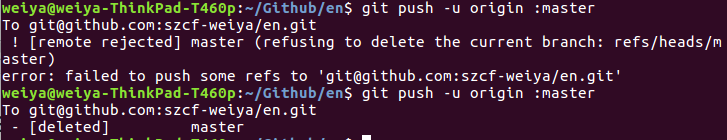

Git Tips¶
删除远程分支¶
git branch -r -d origin/branch-name
此时需要更改仓库的默认分支，不然直接运行下面的命令会报错
git push origin :branch-name

图中第一次是更改默认分支前的出错信息，第二次是更改完默认分支的信息。
删除本地分支¶
git branch -d branch-name
提高git clone速度¶
git config --global http.postBuffer 524288000
git clone所有远程分支¶
git clone .... cd .. git branch -a git checkout -b gh-pages origin/gh-pages
git删除大文件¶
初次配置Git¶
- 下载安装
apt-get install git
- 配置
git config --global user.name "test" git config --global user.email "test@163.com"
- ssh
ssh-keygen -t rsa -C "test@163.com"
复制~/.ssh/id_rsa.pub到github上。
修改origin¶
git remote rm origin git remote add origin git@192.168.1.18:mStar/OTT-dual/K3S/supernova
or
git remote set-url origin git@192.168.1.18:mStar/OTT-dual/K3S/supernova
git branch¶
git init¶
gitignore 失效¶
有时候在项目开发过程中，突然心血来潮想把某些目录或文件加入忽略规则，按照上述方法定义后发现并未生效，原因是.gitignore只能忽略那些原来没有被track的文件，如果某些文件已经被纳入了版本管理中，则修改.gitignore是无效的。那么解决方法就是先把本地缓存删除（改变成未track状态），然后再提交：
git rm -r --cached . git add . git commit -m 'update .gitignore'
更新远程代码到本地¶
方式一¶
git remote -v git fetch origin master git log -p master origin master git merge origin master
方式二¶
git fetch origin master:temp git diff temp git merge temp git branch temp
关于LICENSE的选择¶
git clone 某个分支或所有分支¶
git clone -b BRANCH_NAME ...
or
git clone ... git branch -r git checkout BRANCH_NAME
更改远程仓库的名字¶
举个例子，如将一个名为epi的仓库改名为depi，再次在本地提交虽然也能成功，但是会提示你原始的仓库已经移动，请修改为新的仓库地址，于是我们可以利用下面的命令进行修改
git remote set-url origin git@github.com:szcf-weiya/depi.git
git pull¶
在使用rstudio的git功能时，某次commit的时候，勾选了amend previous commit，然后push的时候就出错了

后来直接运行git pull后，重新push，便解决了问题。
附上git pull的某篇博客git pull命令
教程¶
Webhook配置¶
需要在腾讯云服务器上自动更新github pages的内容，于是采用webhook来实现。
npm install -g forever forever statr server.js
显示 user.name 和 user.email¶
git config user.name git config user.email
删除github的master分支¶
Git push与pull的默认行为¶
GitHub 项目徽章的添加和设置¶
以及
webhooks 响应特定分支的 push¶
参考Web Hooks - execute only for specified branches #1176@rtripault
提取 json 中的 ref，在 do_POST() 中进行设置响应动作。
命令行同步 fork 的仓库¶
- 添加原仓库，比如
git remote add upstream git@github.com:LCTT/TranslateProject.git
查看当前远程仓库
git remote -v
- pull
git pull upstream master
参考Quick Tip: Sync a GitHub Fork via the Command Line
撤销未被 add 的文件¶
git checkout -- file
或者撤销所有更改
git checkout -- .
rewrite 时百分比的含义¶
表示相似性。
参考What does the message “rewrite … (90%)” after a git commit mean? [duplicate]
Travis CI¶
中文折腾为什么 Travis CI 中用 ‘*’ 号不会上传文件，最后还是指定了文件名。
刚刚找到解决方案 How to deploy to github with file pattern on travis?
简单说要加上
file_glob: true
放弃本地修改¶
未 git add¶
直接用 git checkout .
已 git add¶
git reset HEAD
已 commit¶
git reset --hard HEAD^
列出另一分支的目录¶
git ls-tree master:dirname
Github 回退¶
git reset --hard HEAD^ git push origin HEAD --force
参考 1. github,退回之前的commit 2. github 版本回退
cannot lock ref¶
参考 git pull时遇到error: cannot lock ref ‘xxx’: ref xxx is at （一个commitID） but expected的解决办法
另外试试 git gc
参考